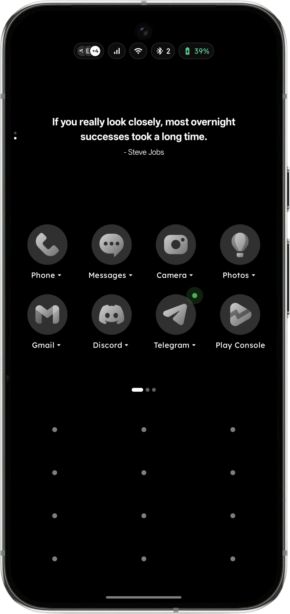

1. Cái Bẫy Smartphone Đối Với Bộ Não Người Mắc ADHD
Não bộ của người có ADHD thường có lượng chất dẫn truyền thần kinh dopamine nội tại thấp hơn mức bình thường. Điều này khiến họ luôn ở trong trạng thái vô thức tìm kiếm sự mới lạ (Novelty-seeking) và kích thích nhanh.
Giao diện Android mặc định được tối ưu hoàn hảo để khai thác điểm yếu sinh học này:
- Phản xạ kích thích thị giác (Visual Trigger): Bạn mở điện thoại chỉ để xem giờ, nhưng mắt bạn đập ngay vào icon đỏ của YouTube hoặc icon bong bóng chat của Messenger. Não bộ phản xạ bấm trước khi bạn kịp suy nghĩ.
- Vòng xoắn mất tập trung (Attention Vortex): Khi đã vào trong ứng dụng, các thuật toán "phần thưởng biến thiên" (variable reward) giữ chân bạn thêm 45 phút cuộn video ngắn.
- Cảm giác tội lỗi (Executive Dysfunction): Sau khi thoát ra, bạn cảm thấy hối hận vì chưa hoàn thành công việc, nhưng lại không biết cách nào để kiểm soát được bàn tay của mình.
2. Khoa Học Đằng Sau "Ma Sát Lành Mạnh" (Healthy Friction)
Trong thiết kế giao diện thông thường, các nhà phát triển luôn cố gắng "giảm ma sát" (frictionless): vuốt là mở, chạm nhẹ là xem. Mục đích là để người dùng không có thời gian dừng lại suy nghĩ.
Ma sát lành mạnh (Healthy Friction) là phương pháp đảo ngược: chủ động chèn thêm một khoảng dừng 0.5 đến 1 giây đòi hỏi hoạt động nhận thức nhỏ trước khi thực hiện hành vi.

Khoảng dừng này cho phép Vỏ não trước trán (Prefrontal Cortex) — cơ quan chịu trách nhiệm về ý chí và lý trí — kịp thời kích hoạt, ngắt kết nối xung động tự động của Hạch hạnh nhân (Amygdala).
3. Ba Trụ Cột Của Key Launcher Được Thiết Kế Dành Riêng Cho Người ADHD
1 Triệt Tiêu Kích Thích Thị Giác Bằng Bàn Phím T9
Màn hình chính không có bất kỳ icon màu sắc hay logo nào. Muốn mở app, bạn phải chủ động nghĩ trong đầu: "Mình cần mở app gì?" và bấm 2 phím số T9 (ví dụ 4-2 cho Grab). Bạn không thể "vô tình bấm nhầm" vào Facebook vì nó không hiển thị trước mắt bạn.
2 Hàng Rào Kho Riêng Tư (Multiple Private Vaults)
Cất giấu các app gây nghiện sâu vào Kho riêng tư có mã khóa bảo vệ. Nếu xung động muốn lướt mạng xã hội bùng lên, yêu cầu nhập mật khẩu bảo vệ sẽ trở thành "bức tường giảm xóc", cho bạn đủ thời gian tự hỏi: "Mình có thực sự muốn xem TikTok ngay bây giờ không?"
3 Dòng Chảy Làm Việc Sâu & Âm Nhạc Tập Trung
Người ADHD thường cần âm thanh nền kích thích nhẹ (binaural beats, lofi, ambient) để não bộ đạt trạng thái Flow State. Key Launcher tích hợp trình phát nhạc tối giản với lời bài hát đồng bộ ngay trên màn hình khóa và Pomodoro 25 phút.

4. Hướng Dẫn Thiết Lập Tối Ưu Cho Người ADHD Trong 5 Phút
5. Kết Quả Thực Tế Từ Cộng Đồng Người Dùng
"Là một người trưởng thành mắc ADHD, điện thoại từng là kẻ thù số 1 hủy hoại sự nghiệp của tôi. Với Key Launcher, việc không nhìn thấy icon màu sắc đã giảm thời gian cầm điện thoại vô thức của tôi từ 6.5 tiếng/ngày xuống còn dưới 2 tiếng. Bàn phím T9 cho tôi đúng 1 giây để nhận ra mình đang định làm gì."— Chia sẻ từ thành viên cộng đồng r/ADHD trên Reddit
Kiểm soát sự tập trung không phải là việc chống lại bản thân, mà là tạo ra một môi trường số mà bản thân bạn không thể bị thao túng. Key Launcher chính là công cụ bảo vệ môi trường số đó cho bạn.